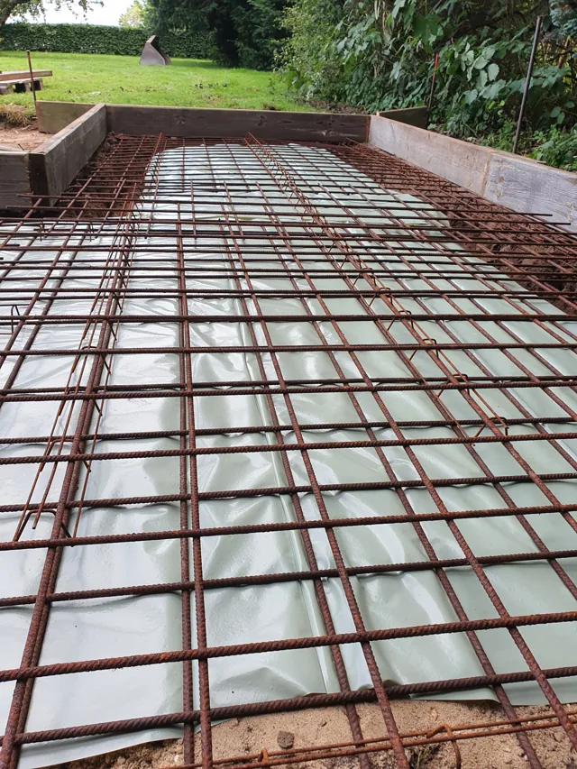
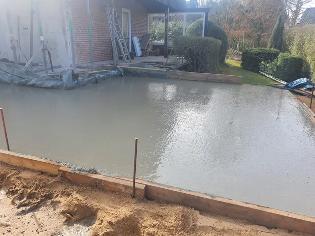
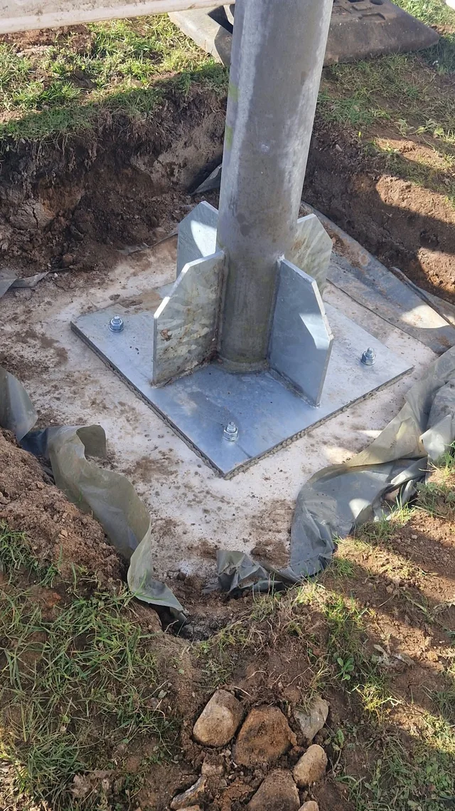
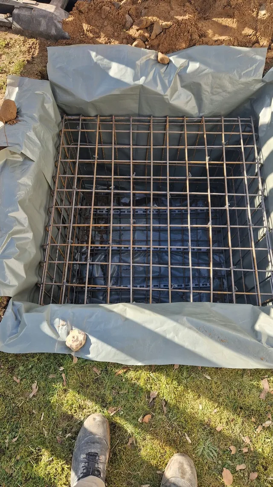

Bilderübersicht zur Prüfung
57 eingereichte Originalfotos sind zugeordnet: 46 zusätzliche Motive und 11 Einreichungen, deren Motiv bereits einmal vorhanden ist. Insgesamt 76 Bilder in den acht Leistungsbereichen. Ähnliche Perspektiven und unterschiedliche Bauphasen bleiben erhalten.
Betonbau · 14 Bilder
Leistungsseite öffnen

01 · Bewehrung und Schalung vor der Betonage
02 · Frisch betonierte Fläche an einem Gebäude
03 · Punktfundament mit befestigter Stahlstütze
04 · Bewehrung eines Punktfundaments vor der Betonage05 · Bewehrung und Schalung einer kleinen Bodenplatte im Innenbereich06 · Bewehrungskorb für ein Streifenfundament07 · Detail der Bewehrung einer eingeschalten Bodenplatte08 · Dämmung und Schalung als Vorbereitung der Bodenplatte09 · Flächige Bewehrung der Bodenplatte vor der Betonage10 · Fertig betonierte Bodenplatte am Gebäude11 · Bewehrungsmatte für ein kleines Fundament12 · Betonplatte mit vorbereiteten Leitungsdurchführungen13 · Betonsockel entlang einer Gebäudewand14 · Frisch betonierte Bodenplatte während der AusführungTor- und Zaunanlagen · 11 Bilder
Leistungsseite öffnen
01 · Anthrazitfarbene WPC-Sichtschutzanlage im bepflanzten Garten02 · Anthrazitfarbener Doppelstabmattenzaun am Wohnhaus03 · Grünes Doppelflügeltor aus Doppelstabmatten04 · Braune WPC-Sichtschutzanlage entlang eines Wohnhauses05 · Grüner Doppelstabmattenzaun entlang eines Baumbestands06 · Schwarzes Gartentor aus Doppelstabmatten im bepflanzten Garten07 · Anthrazitfarbene WPC-Sichtschutzanlage während der Montage08 · Grüne Toranlage aus Doppelstabmatten während der Montage09 · WPC-Sichtschutzanlage aus einer weiteren Gartenperspektive10 · Doppelstabmattenzaun am Baumbestand aus einer weiteren Perspektive11 · Montage einer Toranlage am gepflasterten Zugang Abbrucharbeiten · 4 Bilder
Leistungsseite öffnen
01 · Maschineneinsatz bei Abbrucharbeiten02 · Rückbau von Mauerwerk im Innenbereich03 · Bagger beim Rückbau von Mauerwerk und Außenanlagen04 · Freigelegter Boden nach dem Rückbau im Innenbereich